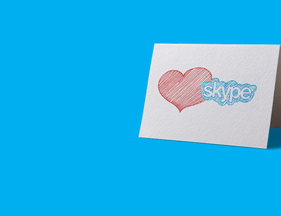

We are fans of older versions of Skype. We created this project for the same lovers of old versions. It contains various information and methods for returning the old design or old versions.
Skype 8 was released in 2018... The ugly interface, the lack of features previously available in version 7 even after 5 years, the redesign of sounds and the complete disconnection of the old client from the servers essentially "buried the client"... However, there are still many people who appreciate that the most classic Skype. This project was created especially for them.